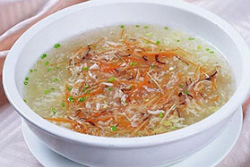
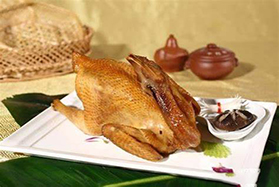
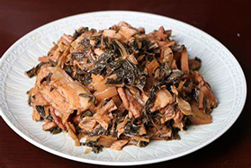
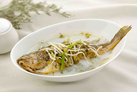

-

-

-

- 
- 
- 
- 
-


浙江菜简介
中国八大菜系之浙江菜
风味特点： 清鲜脆嫩，精致典雅，南北交融
烹调方法： 擅长技法：以炒、炸、烩、熘、蒸、烧六类为主
起源时间：
新石器时代：河姆渡遗址出土陶制炊具及动物残骸，距今约7000年。
春秋时期：越国定都会稽（今绍兴），奠定饮食基础，如清汤越鸡源于勾践养鸡备战。
南宋定型：临安（杭州）成为经济中心，宋嫂鱼羹等名菜形成
主要食材： 山海物产、时令辅料、野味等特产
主要菜式： 杭州菜、宁波菜、绍兴菜、等
主要名宴： G20国宴、东坡宴、九姓渔民宴、霞客宴等
了解更多
豆腐皮卷肉末油炸，形如马铃酥脆有声，韩世忠取豆腐皮传说，杭州宴席佐酒经典
南荣
绍兴梅干菜焖五花肉，咸香渗透油润不腻，徐文长创制典故，周恩来赞为“江南乡愁”
violet
鳜鱼丝配火腿笋丝烩羹，南宋宋五嫂创制，汤鲜醇厚似蟹肉，乾隆赞为“赛蟹羹”
马楚
荷叶裹鸡黄泥煨烤，泥壳焦香锁鲜，肉质酥烂脱骨，南宋“包烹法”与朱元璋传说交织
赖旺财